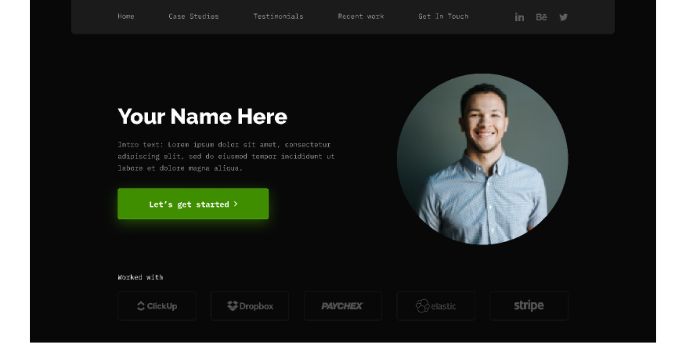

Project 1: Weather App
A web application that fetches weather data based on user input and displays it with a clean and simple UI.

Project 2: Todo List
A basic todo list app where users can add, edit, and delete tasks. It’s built using HTML, CSS, and JavaScript.

Project 3: Personal Portfolio
A personal portfolio website where users can showcase their skills, projects, and experiences. Built with HTML, CSS, and JavaScript.